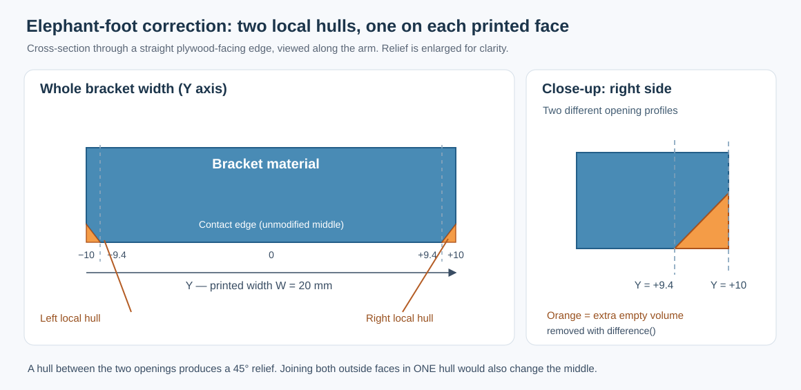
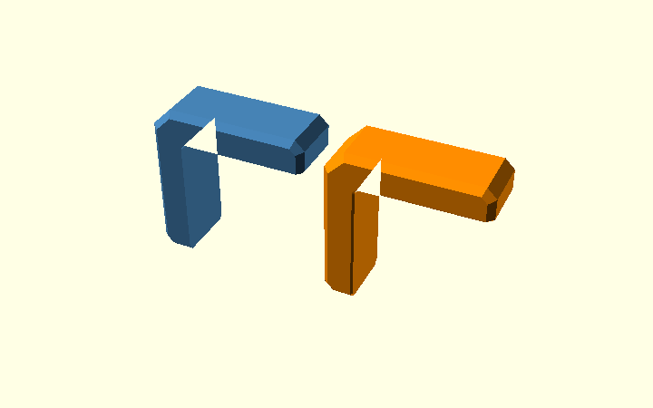
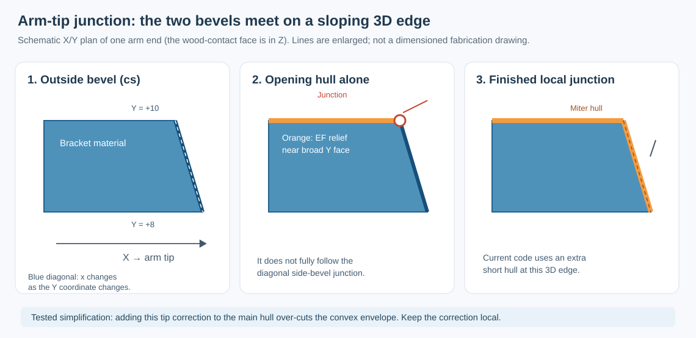

Chamfers on the Corner Bracket
This is the one detailed walkthrough of chamfers in the actual Corner Bracket model. It follows the construction order: complete 2D polygon → rounded inside corner → 3D body → outside chamfers → elephant-foot relief → corner junctions.
The Polygon Guide explains how the inside radius
is built. The Hull Guide teaches the general
hull() operation with a simple rectangular bar. This page is where
those ideas are applied to the real bracket.
| Parameter | Default | Purpose |
|---|---|---|
c |
3 mm | 45° cuts at the two arm ends, part of the original polygon |
ce |
6 mm | 45° cut at the outside corner, also part of the polygon |
cs |
2 mm | Bevel along the outside edges of the two broad printed faces |
ef |
0.6 mm | Print-bed relief along the plywood contact edges, on both printed faces |
r_in |
2 mm | Rounded inside corner of the L; not an edge chamfer |
1. The actual profile is already a complete polygon
There is no preliminary, plain L polygon in the production model.
sharp_profile() defines the entire outline of the bracket,
including the outer corner (ce), both arm-end chamfers (c) and
the short ef bevels at the wood-facing arm tips.

The critical points are already in that one polygon():
openscad
module sharp_profile() {
polygon(concat(tip_top, [
[armH, t - c], [armH - c, t], // top arm end, c
[-t + ce, t], [-t, t - ce], // outer corner, ce
[-t, -armV + c], [-t + c, -armV] // upright arm end, c
], tip_vert, [[0, 0]]));
}
The name sharp_profile() only means that its inside corner
at [0,0] is still sharp. It does not mean that its arm
ends or outside corner are unchamfered.
profile() then makes one addition to this complete polygon:
the small inside fillet made by inside_corner_2d(r_in), using a
2D square minus a circle. That fillet is added with union().
See the Polygon Guide for its construction.

The difference between these two pictures is only the small inside fillet. The arm ends and outside corner do not change.
Finally, linear_extrude(height = W, center = true) and
rotate([90,0,0]) turn this profile into a 20 mm-wide solid:
its broad printed faces lie at Y = −10 and +10 mm.

2. Outside side-edge chamfers: cs
The c and ce cuts above were drawn in 2D. The outer
side-edge bevel cs is different: it changes the 3D thickness
edges near Y = ±10.
The model constructs a temporary convex outer envelope,
outer_shape(). It deliberately fills the open inside of the L,
because this is only a helper for the outside edges.

Two overlapping solids form the input to hull():
| First input | Second input |
|---|---|
| Full outside outline | Outline inset using offset(delta = -cs) |
Width W - 2*cs = 16 mm |
Full width W = 20 mm |
| Y from −8 to +8 mm | Y from −10 to +10 mm |

openscad
module side_chamfer_env() {
rotate([90,0,0]) hull() {
linear_extrude(height=W-2*cs, center=true)
outer_shape(); // full outline, narrow Y
linear_extrude(height=W, center=true)
offset(delta=-cs) outer_shape(); // inset outline, full Y
}
}
The outer boundary moves inward by 2 mm between Y = ±8
and Y = ±10. hull() joins these boundaries with sloping
faces. The resulting helper is still convex and fills the L opening.

The next operation is essential:
intersection() with the true extruded profile() removes
the unwanted convex fill. Only the real L with its outside
side-edge bevels remains.

3. Elephant-foot relief: what goes into its hull()?
Printing orientation matters: the bracket rests on a broad
Y-facing side during printing. Slight first-layer expansion can
interfere with the plywood-facing surfaces. Here ef=0.6 mm
provides clearance near both Y side faces.
Rather than offsetting the solid bracket, the model starts with the empty space between the two arms:
openscad
module inside_opening_2d() {
reach = max(5, cs + ef + 1);
difference() {
translate([0, -armV - reach])
square([armH + reach, armV + reach]);
if (r_in > 0) inside_corner_2d(r_in);
}
}
That cutting opening has straight boundaries along the plywood-contact faces and a curved boundary at the inside radius. Its ends extend beyond the arms to avoid artificial end caps.
For one printed side, two very thin 3D copies of this opening are made:
| Location | Input to hull() |
Effect |
|---|---|---|
| Y = +9.4 mm | Original opening | No print relief in the middle |
| Y = +10 mm | Opening expanded by offset(delta=0.6) |
Room for first-layer bulging |
At the other printed side the same pair appears at Y = −9.4 mm and Y = −10 mm.

```openscad module opening_layer(y, expansion=0) { translate([0,y,0]) rotate([90,0,0]) linear_extrude(height=0.002, center=true) offset(delta=expansion) inside_opening_2d(); }
module inside_relief_envelope() { if (ef > 0) for (side=[-1,1]) hull() { opening_layer(side(W/2-ef)); // unchanged opening opening_layer(sideW/2, ef); // expanded opening } } ```
Each hull() joins a normal opening to a slightly expanded one.
Subtracting this volume from body() creates the 45°
relief along the straight contact faces and the rounded inside
corner. The 0.002 mm layer thickness is a modelling tolerance,
not the specified relief depth.
Why not one hull connecting all four slices? That would put both enlarged outside outlines in a single convex envelope and enlarge the opening throughout the width, including the undisturbed middle. Thus, the model uses one local hull per side.

4. Where the two kinds of bevel meet
The two main inside_relief_envelope() hulls correctly create the
elephant-foot relief along the straight plywood-contact faces and around
the rounded inside corner.
At each arm end, however, that relief meets the diagonal cs
side-edge bevel. With only the two main hulls a small pointed/flat
junction remains.

Why not put that small correction into the same hull?
That was tested directly.
For one print side, the main elephant-foot cutter is a convex hull. The extra arm-tip correction lies beside that cutter in such a way that the combined required cutting volume is not convex.
If the tip correction is added as another child of the same hull(),
OpenSCAD does exactly what hull() promises: it fills the complete
convex envelope between the opening and the tip correction. That removes
too much material around the junction.
Clipping the two opening profiles with the existing cs envelope does
not solve it either: that only shortens geometry which is already outside
the solid; it does not add the missing cutting volume inside the small
tip junction.
So the production model keeps the two main opening hulls and adds small
local miter hulls only where ef meets cs:
```openscad module inside_relief_envelope() { if (ef > 0) for (side = [-1, 1]) hull() { opening_layer(side * (W / 2 - ef)); opening_layer(side * W / 2, ef); } }
module relief_corner_miters() { // Two short local hulls per print side: // horizontal arm end + vertical arm end. ... }
module chamfered_body() { difference() { body(); if (ef > 0) { inside_relief_envelope(); relief_corner_miters(); } } } ```
The local hulls are not post-processing. They are ordinary parametric
OpenSCAD cutting geometry in the same difference() operation.
The focused regression test compares the arm-tip region before and after these local hulls. With the standard geometry, adding them removes more than 99% of the former local mismatch while leaving the rest of the elephant-foot construction unchanged.

5. What is checked, and what is not
The CI test verify-elephant-foot-hull.sh compares the
complete bracket with the former per-edge cutter implementation,
including its mounting holes. A second check isolates the
four arm-tip junctions. Both tests passed for the supported
parameter combinations in PR #10.
The geometry has not yet been physically test-printed; clearance, strength and the visual quality of every bevel still need checking.
For a first introduction to hull(), continue with the
short Hull Guide. For the mathematical
construction of the inside radius, use the
Polygon Guide.